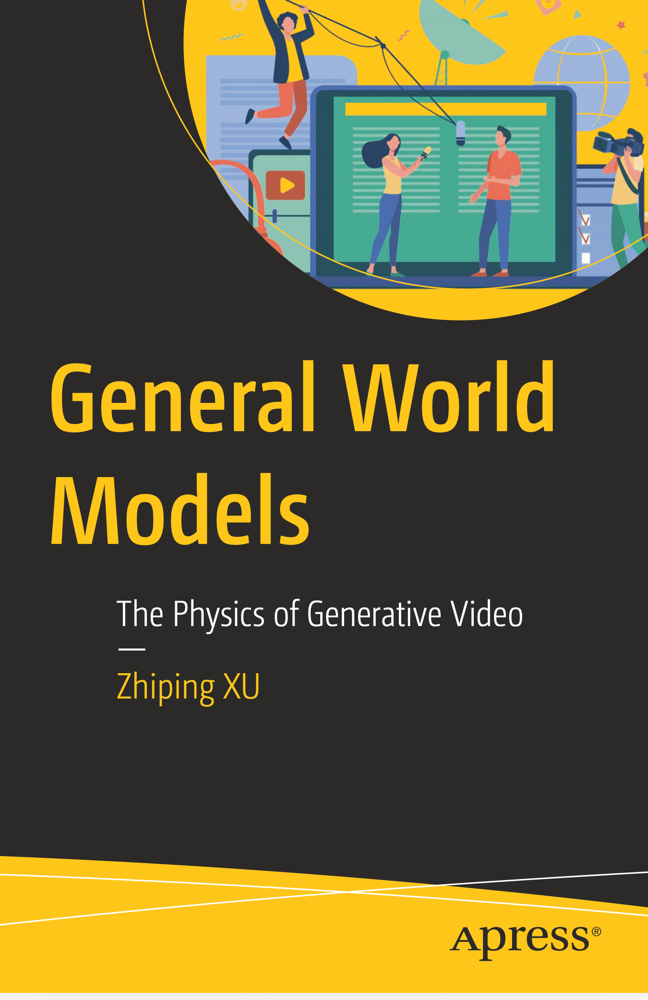

macOS / Windows / Linux · AI Coding & Computer Use
ZenCode (v3.14.32)
支持 macOS / Windows / Linux 的 AI 编程与创作工作台：内置源码 IDE、独立模型调度器、微信配对远程续接桌面任务、覆盖三个平台的 Computer Use 桌面操控，以及图像/视频/可编辑幻灯片创作工作室。
COLLEGE OF COMPUTER SCIENCE AND ARTIFICIAL INTELLIGENCE · FUDAN UNIVERSITY
徐志平，复旦大学计算与智能创新学院教师，Springer / Apress 英文专著《General World Models: The Physics of Generative Video》独立作者。致力于将前沿生成式世界模型、多模态智能体与一线教学科研深度融合，作为架构指挥官与质量验收官，构建跨平台生产级开源软件与互动式教学系统。
01 / 出版著作
系统性阐述生成式视频与通用世界模型（General World Models）背后的物理一致性、时空表征、镜头语言控制与多模态提示工程体系。

由 Springer Nature 旗下 Apress 正式出版（独立作者：Zhiping Xu）。本书从生成式视频的物理规律与世界模型出发，深入剖析以 Sora 2、Veo 3 等为代表的新一代视频生成架构，涵盖核心提示词动力学、时空穿越自拍与角色一致性、视觉叙事、电影级运镜控制、商业级制作流以及情绪表达与未来世界模型演进。
02 / 旗舰套件
深度整合 ZenMux 多模型路由、本地加密凭证、跨应用上下文协同与原生桌面控制，提供开箱即用的签名安装包。
支持 macOS / Windows / Linux 的 AI 编程与创作工作台：内置源码 IDE、独立模型调度器、微信配对远程续接桌面任务、覆盖三个平台的 Computer Use 桌面操控，以及图像/视频/可编辑幻灯片创作工作室。
全功能开源 AI Office 套件（Word / Excel / PowerPoint / PDF / Markdown）：高保真兼容微软格式，内置 Science/Nature/Cell/IEEE 3+1 严格审稿委员会、OpenAlex/arXiv 文献检索与 GB/T 7714 引文、试卷去手写修复、公式 OCR 与微信 PDF 审稿联动。
原生 macOS AI 浏览器：融合 AppKit 与 Chromium 内核，内置 ZenMux 侧边栏与页面视觉操作 Agent、双语沉浸式翻译、划词生词本、YouTube 8× 广告加速与视频章节总结、X 书签归档与垃圾号护盾，以及 Canvas/WebAudio 反指纹隐私保护。
跨平台开源 AI 视频剪辑软件：支持高清录屏、AI 分镜生成、时间轴实时字幕编辑与属性同步、丰富视觉转场特效及本地无损导出。
面向 Mac 的原生图层式 AI 图像生成与合成编辑器（基于 Compositor 深度扩展 ZenMux 多模型生图与选区重绘工作流）。
支持 1–5 人偶姿态参考、人脸与服饰控制、流式提示词优化、涂鸦修图与分层 PSD 导出的 AI 图像创作工作台。
03 / 智慧教学
源自复旦大学一线教学经验，将程序设计、数据流思想、数理化与语言学习转化为可交互、防幻觉、可离线验证的教学软件。
10 个 Python 互动实验室，从变量、容器、函数到文件读写与数据分析。通过等距可视化与预设示例观察程序过程，独立 HTML 可离线打开。
把 16 周大学 Python 课程变成 32 关像素冒险与 160 道编程试炼，法术手册覆盖 Pandas、正则、HTTP API 与大模型调用。
通用 Python 本地可视化节点编辑与运行工作台，数据流与控制流分离，附带 26 个从空画布开始的中文视频教程。
支持导入 1–40 周教案，数理化题目强制由主模型生成双独立解法并经复核模型验算通过后入库，提供局域网课堂练习与批改。
A7 数学大纲驱动的 50 关互动闯关游戏（Term A–E），支持拖拽答题、错题即时图解与浏览器/桌面双端运行。
沪科版高中化学五册教材精读、知识图谱、3D 分子可视化、RAG 问答与高考口径双模型出题判分桌面台。
高考数学本地题库、知识图谱与智能出题桌面应用，支持 macOS、Windows 与 Linux 全平台。
基于 ZenMux 的本地 AI 英文外刊阅读工作台（EnglishAIRead）与 Apple Silicon 牛津图解词典点读阅读器（OxfordVisualDict）。
Phaser 3 数学射击肉鸽游戏（MathGame），以及 iPad 手绘流程图自动规整转 Python/Swift 代码的 iOS 应用（AIDrawProg）。
面向 Codex 的中文数学可视化解题技能：自动生成双解法交叉验证、MetaPost 几何图、中文 LaTeX PDF 与 Manim 动态公式动画。
04 / 科研与仿真
涵盖自主数据挖掘流水线、果蝇全脑连接组城市交通仿真、复旦三维校园复原、Apple Silicon 群体智能加速以及纯代码数学短片。
AI 科研桌面工作台：论文检索与 RAG 证据库、CSV / Excel 多文件分析、项目实验环境、多语种 LaTeX / PDF 报告，以及 AI 数学辅助与 Lean 证明验证。
类 ComfyUI 的安全意图驱动可视化数据挖掘与自动化分析工作流框架，拖拽节点完成清洗、建模、可视化并导出 PDF/MD/HTML 报告。
上海中心城区三维交通神经控制实验：将果蝇全脑神经活动接入实验车，与 100 个行人脑、1,000 个车辆脑在同一套三维路网中交互。
结合实景照片与校园地图复原建筑、道路与雕塑。桌面与移动浏览器均支持远、中、近三级细节、按需加载与省电画质，轻量开启 WebGL 校园漫游；提供 Blender 工程。
完全用 JavaScript 与数学公式绘制的 60 秒无口播宇宙哲思短片：奇点、尘埃、记忆之网、最后一颗恒星，以及留下的问题。
基于朱自清《荷塘月色》的 Three.js 实时场景与环境音交互阅读体验，以及基于大五人格模型的 3D 粒子心智连续光谱（Phycal）。
Apple Silicon 11× 提速群体智能引擎（MiroFish）、PDF 边界框高亮溯源审计（HyperRAGAudit）与 Kokoro-82M 多语言有声书生成（Audiblez）。
05 / 原生工具
坚持本地优先（Local-First）与零云端隐私泄露原则，使用 Swift / AppKit / SwiftUI 为 Apple 生态打造轻量纯粹的系统工具。
完全离线运行、内置 116 万条本地词库、支持长拼音整句预测与个人表达习惯自学习的 macOS 原生简体中文输入法。
基于 SwiftUI 与 Apple NLEmbedding 本地向量化的原生 macOS AI 邮件客户端，支持 IMAP/POP3/SMTP 与不上传云端的邮件问答。
安全透明的原生 macOS 磁盘空间清理与卸载工具，按容量溯源可解释的垃圾文件并在卸载前展示关联残留。
支持鼠标点击自动缩放 (SmartFocus)、内置时间轴标注编辑器、多音轨混音与本地 H.264 MP4 导出的 macOS 录屏软件。
内置 aria2c、yt-dlp 与 ffmpeg 的 macOS 公证下载客户端，支持多连接分块可视化与 YouTube/X 高清音画合成。
跨 iOS/macOS/Android 扫码局域网与蓝牙零云端直传工具（已上架 Mac App Store），以及 MacBook 合盖屏幕动效工具 Mac Duo。